Концепт личного кабинета студента и сотрудника деканата
Отчёт о процессе создания с помощью ИИ-ассистентов
Это концепт для конкурса, не официальный сервис СВФУ. Все ФИО, оценки и номера зачёток вымышленные.
Студенты СВФУ сейчас собирают учёбу из кусков: Excel с сайта, Telegram-бот, чат группы, личные вопросы преподавателям и очередь в деканат. Перенос пары легко пропустить, баллы БРС часто видны только у препода, а за справкой приходится приходить дважды.
Что делает кабинет: одно место «что важно сейчас» — расписание с заметными изменениями, баллы с порогами («до допуска не хватает N»), заявки со статусом, уведомления, профиль. Отдельно — кабинет сотрудника института (очередь заявок, объявления, переносы).
Выборочно: знакомые и одногруппники + один первокурсник. ФИО не собирали.
«Пропускал и зря тоже приходил, в основном от того, что одногруппники не предупредили…»
«Вот бы учёт баллов, а также удобное расписание, а то в Excel очень неудобно.»
«Интересно как вы якутский сделаете. Делайте.»
Опрос подтвердил уже выбранное ядро (переносы, БРС-подсказки, заявки, три языка), а не добавил новые экраны постфактум.
| Инструмент | Для чего | С когда |
|---|---|---|
| Claude Code (Claude Opus 5.5) в Claude для Windows | Разбор положения, стек, код, документация для агентов, проверка | 07.11 |
| Cursor Agent (Composer) | Доводка с этапа заявок, маскот, деплой-инструкции, отчёт | 13.11 |
| Cursor GenerateImage | Черновые спрайты Тааса (заменены ручными SVG) | 21.11 |
| Playwright (временно) | Скриншоты экранов и растеризация спрайтов | 13.11 |
| Python + fontTools | Проверка якутских букв в шрифтах и контраста цветов | 13.11 |
| Node.js 24, create-next-app, GitHub | Сборка, каркас, версионирование (коммиты — человек) | весь проект |
| Timeweb Cloud + Docker + Caddy | VPS в РФ, Postgres, HTTPS | 22.11 |
Полный список и лицензии стороннего ПО — в репозитории: docs/ai-process/tools.md, docs/licenses.md.
Подробный дневник — docs/ai-process/journal.md. Ниже — сжатый путь и типичные ошибки ИИ.
| Этап | Суть промпта / задачи | Ошибка ИИ → правка человека |
|---|---|---|
| 0–1. Разбор и каркас | Положение конкурса → план, Next.js App Router, i18n | План начинал с БД до продуктовых решений → сначала product.md |
| 2–3. Продукт и дизайн | Роли, БРС, палитра, шрифт с саха-буквами | Шрифты проверяли скриптом, не «на глаз» |
| 4. Auth + DAL | Сессии, scrypt, доступ только через DAL | Одинаковая соль у паролей → тест базы поймал, исправили |
| 5–10. Экраны | Расписание, баллы, заявки, уведомления, «Сегодня», сотрудник | Пороги БРС только в lib/brs.ts + тесты; чужой id → 404 |
| 11–14. Хостинг | Timeweb, Docker, Caddy, техдомен | Лимит LE на *.tw1.ru → зона .tw1.su; Docker обходил ufw → bind 127.0.0.1 |
| 15–17. Тема, Таас | Переключатель темы, маскот-алмаз | Hydration спрайтов, «залипание» срочных реплик |
| 18–19. Опрос, мобилка | 4 ответа; overflow 360; тогглы только в профиле/входе | Шапка телефона переполнялась семью кнопками 44px |
Правило команды: код пишет ИИ, коммиты и пуш делает человек; секреты в чат не кидаем.
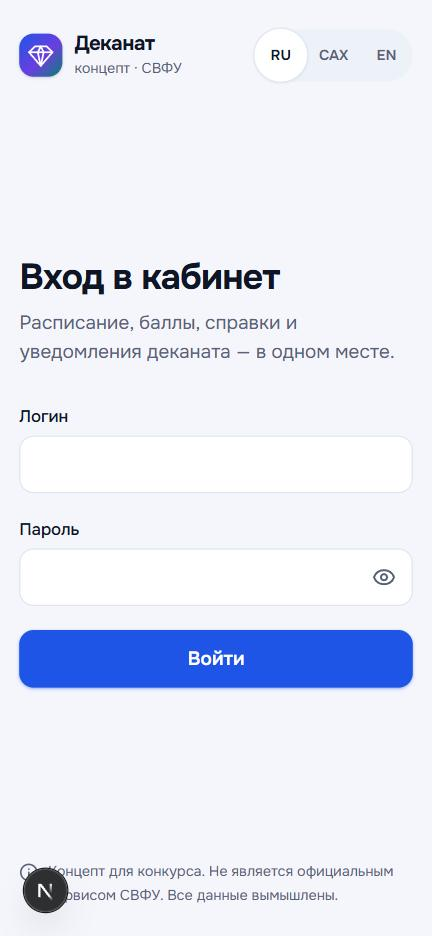
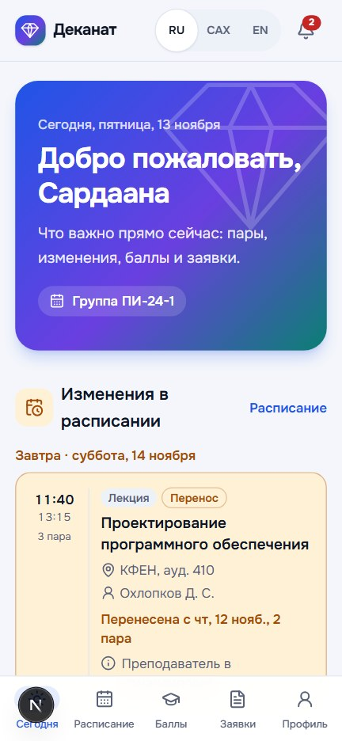
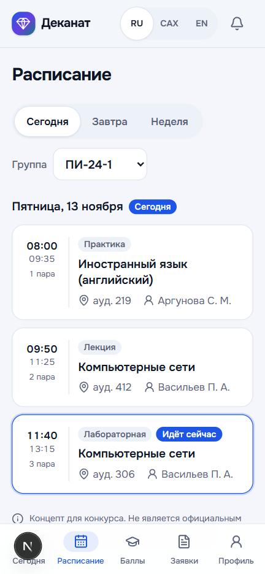
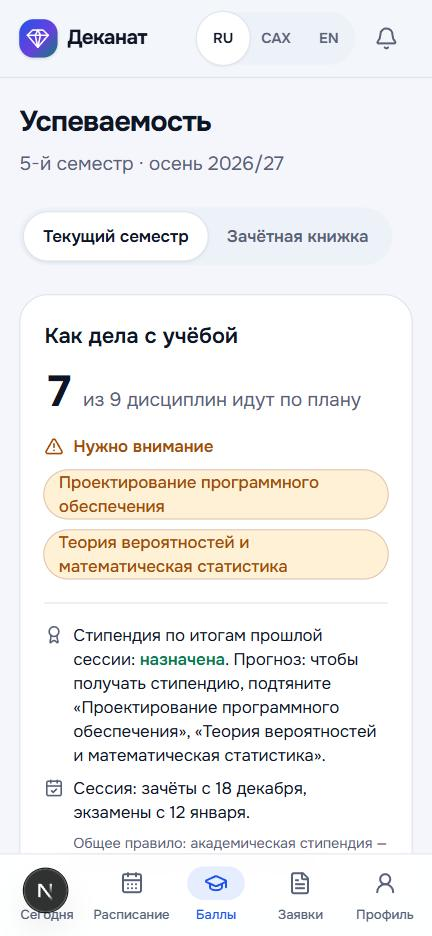
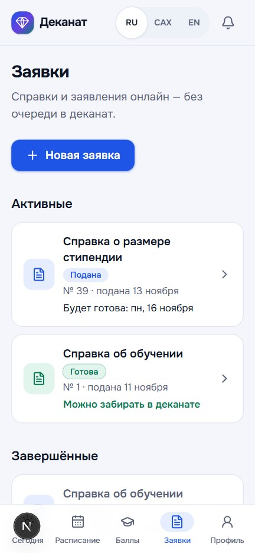
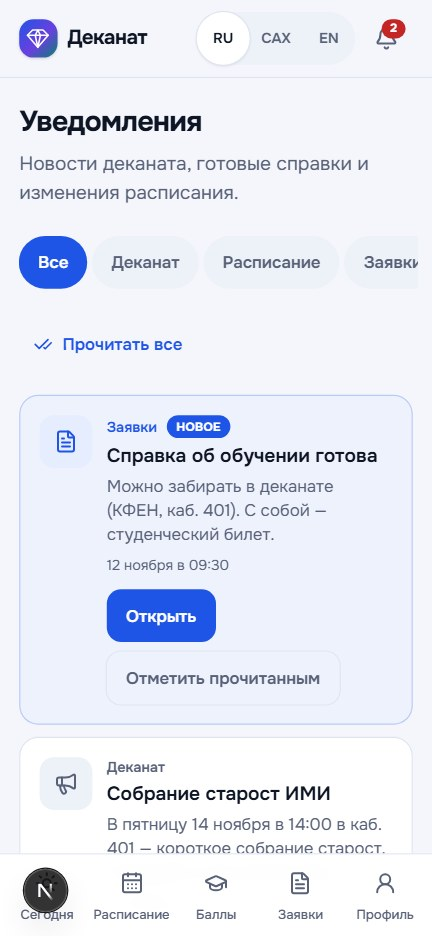
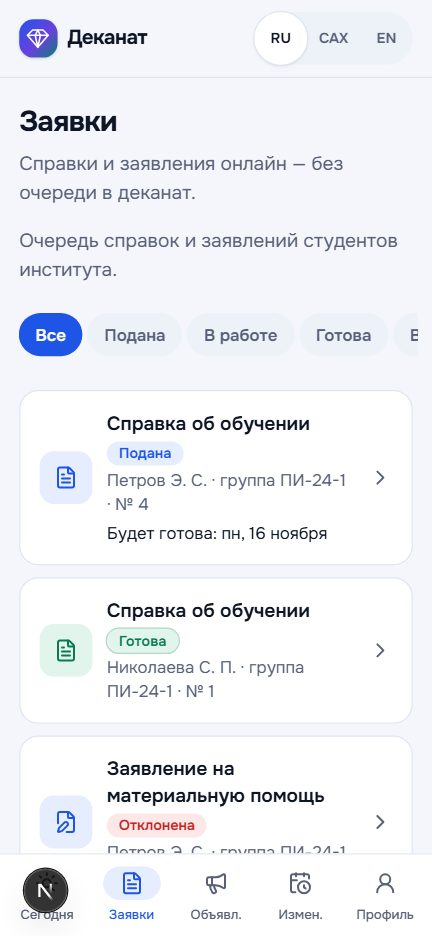
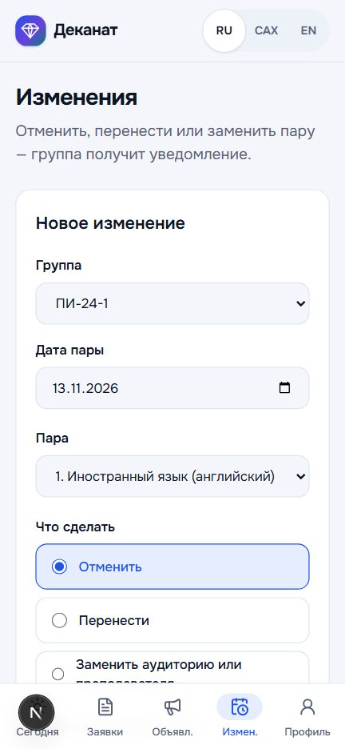
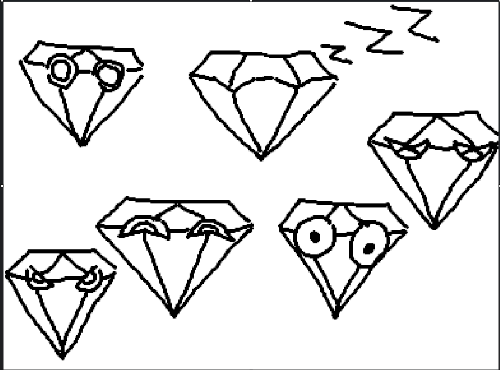
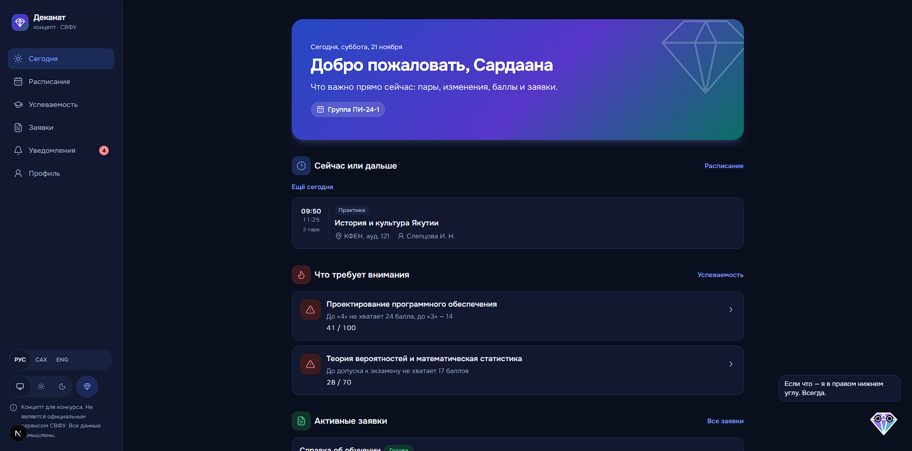
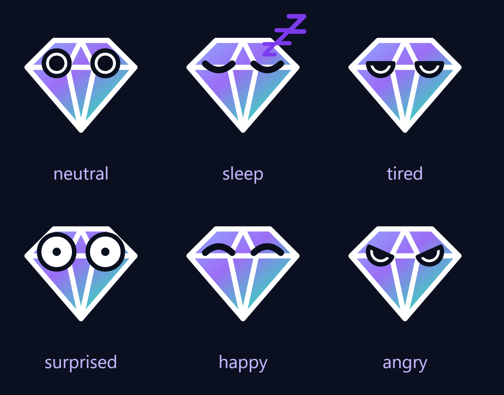
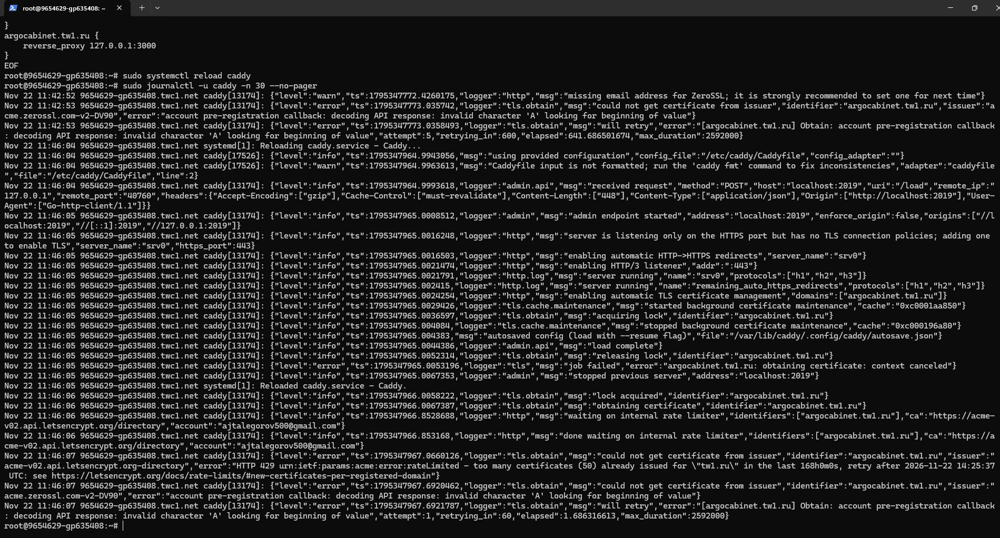
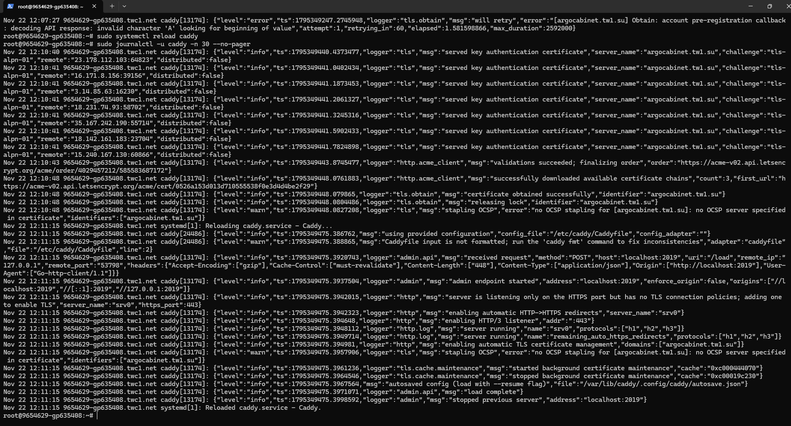
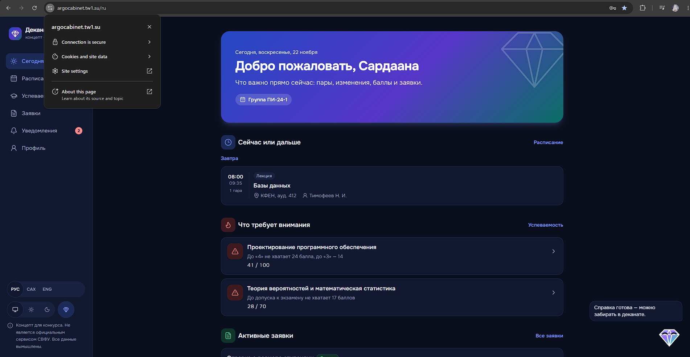
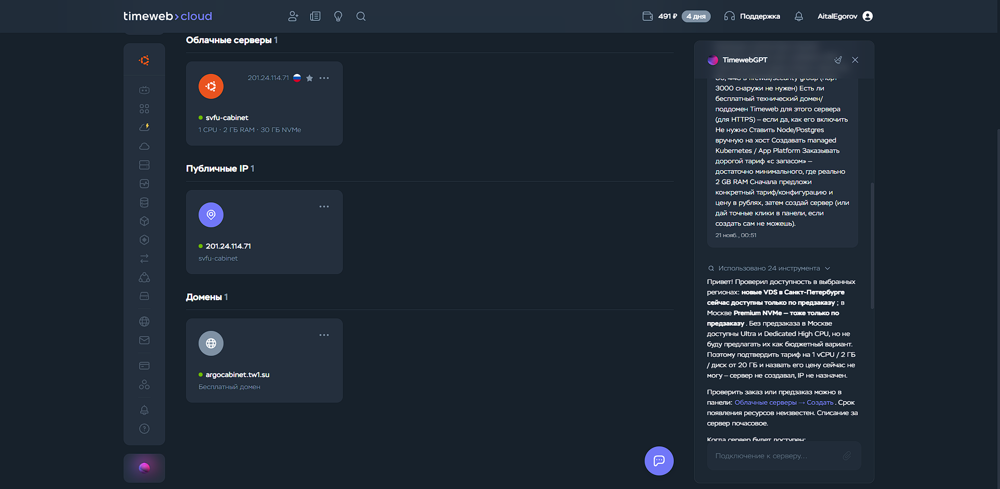
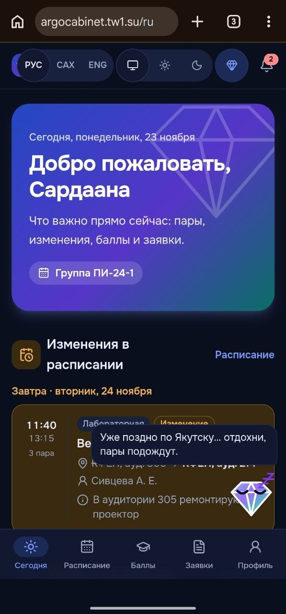
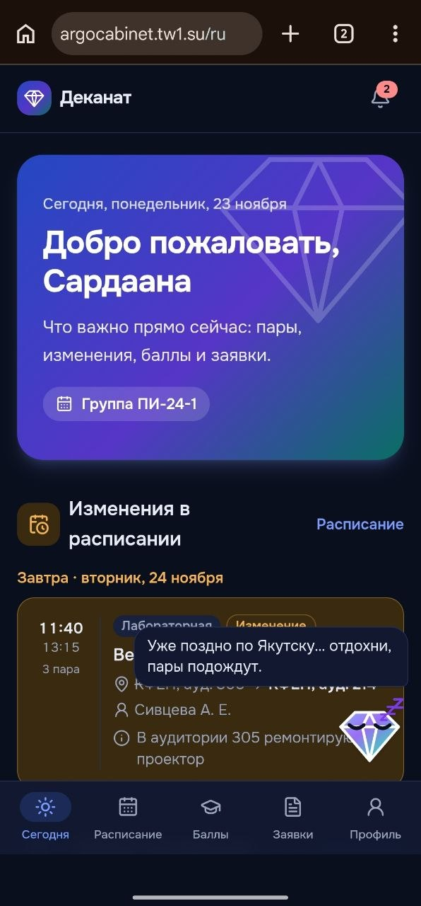
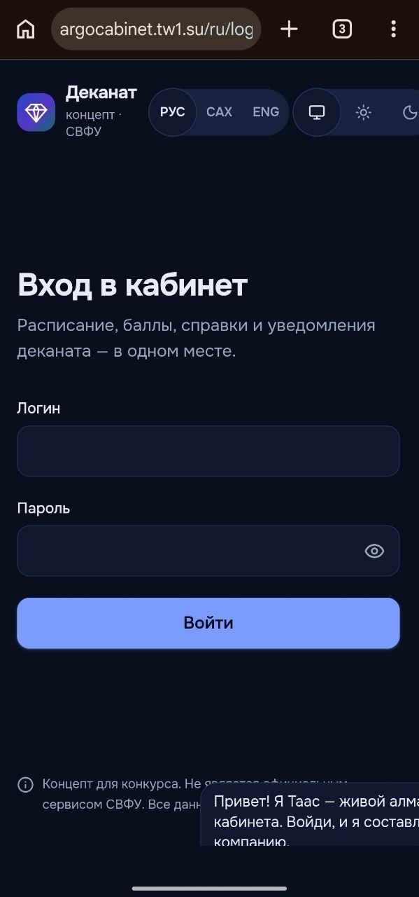
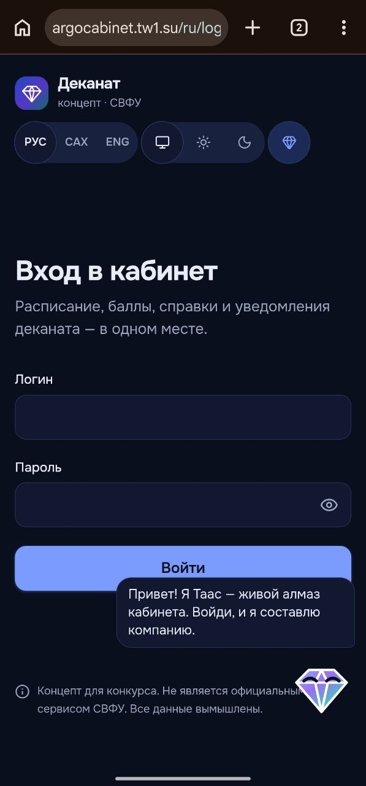
.env* (в gitignore). Демо-пароль не в коде и не в этом PDF.Подробнее: docs/security.md.
В этом PDF — сжатая версия. Полный след работы с ИИ, все скриншоты этапов и исходные документы лежат в репозитории:
| Что | Путь в репозитории |
|---|---|
| Дневник этапов, промпты, ошибки ИИ | docs/ai-process/journal.md |
| Список ИИ-инструментов и сервисов | docs/ai-process/tools.md |
| Скриншоты по этапам (00…15) | docs/ai-process/screenshots/ |
| Концепция продукта, БРС, экраны | docs/product.md |
| Опрос однокурсников | docs/research/survey.md |
| Безопасность простыми словами | docs/security.md |
| Архитектурные решения | docs/decisions.md |
| Чек-лист требований конкурса | docs/requirements.md |
| Инструкция деплоя (РФ, HTTPS) | docs/deploy.md |
| Исходник этого PDF | docs/ai-process/report.html |
Репозиторий: https://github.com/Aitalidzio/svfu-cabinet
Сайт: https://argocabinet.tw1.su/ru/login
Пароль у всех аккаунтов один и тот же — передаём жюри в комментарии к работе (не в открытом PDF). Ниже полный список логинов.
| Логин | Роль | Институт / группа |
|---|---|---|
s.nikolaeva | студент | ИМИ · ПИ-24-1 |
e.petrov | студент | ИМИ · ПИ-24-2 |
a.egorov | студент | ФТИ · Ф-25-2 |
m.semenova | студент | ФТИ · Ф-24-1 |
a.ivanov | студент | ФЭИ · ЭК-24-1 |
k.vasileva | студент | ФЭИ · ЭК-23-1 |
n.pavlov | студент | ЮФ · Ю-25-1 |
t.andreyeva | студент | ЮФ · Ю-24-1 |
dekanat.imi | сотрудник | ИМИ |
dekanat.fti | сотрудник | ФТИ |
dekanat.fei | сотрудник | ФЭИ |
dekanat.uf | сотрудник | ЮФ |
Удобный сценарий для жюри: s.nikolaeva (студент) → dekanat.imi (сотрудник того же института). Чужой id заявки даёт 404.
Сайт должен оставаться доступным из РФ без VPN до 28.11.2026.